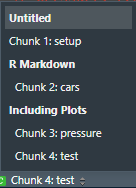
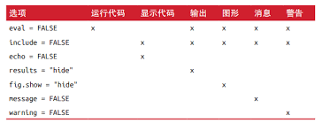
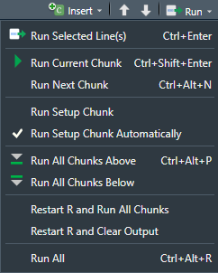
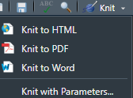

Part5 沟通
分析者通过转换、可视化与建模来理解数据，最终的目的是同甲方/老板汇报结果，否则无论数据分析做的多么精彩，都没什么用。
因此，沟通工作成果至关重要。
本部分分为四块：
- R markdown
- 使用 ggplot2 进行图形化沟通
- R markdown 输出类型. 其中包括仪表盘、网站和书籍
- R markdown 工作流. 介绍如何制作“分析式笔记本”，以及如何系统地记录工作中的成功和失败
R markdown
R markdown 官方网址
R markdown 提供了统一的写作框架，可以集成代码、输出结果和文本注释。
R markdown 完全可重用，支持多种输出形式，包括PDF、Word、PPT等。
R markdown 集成了一些 R 包和外部工具。基本上不能使用?来获取帮助。不过，在 Rstudio 中有参考资料可用:
- R markdown 速查表：Help → Cheatsheets → R Markdown Cheat Sheet
- R markdown 用户指南： Help → Cheatsheets → R Markdown Reference Guide
R markdown 文件三个主要组成部分：
- markdown 文本。此处不再做介绍，多加练习就好。
- 代码段
- YAML文件头
代码段
可运行代码，插入方法：
- 组合键：
Ctrl+ALT+I - 工具栏
Insert按钮 - 手工输入标记符 ```{r} code ```
Ctrl+Enter 或 Ctrl+Shift+Enter 组合键来运行代码段内的全部代码。
接下来介绍代码的头部 ，由 ```{r 开头可选的代码段名称，由逗号分隔的代码段选项， 其他}。```为结尾
代码段名称
```{r by-name}```. 命名一段代码有几个好处：
- 使用脚本编辑器左下角的弹出式代码浏览菜单，更方便浏览特定的代码段
- 可以使代码段生成的图形具备有意义的名称，从而更容易在其他地方使用
- 可以建立缓存代码段的网格，以避免每次运行都重新调用昂贵的计算资源
setup 这个代码段名称具有特殊意义。当处于笔记本模式时，名称为 setup 的代码段会在其他代码运行前运行一次。所以可以在 setup 代码段中设置全局选项
代码段选项
可以使用 选项 来定制代码段输出，选项是提供给代码段头部的参数。knitr提供了很多选项，可以用来定制自己的代码段。完整的选项列表: knitr options
接下来介绍几个最重要的代码段选项列表：
- eval = FALSE 禁止对代码进行求值。（也就是不能运行）通常用于显示 示例代码 或 不通过每行注释 禁用大段代码。
- include = FALSE 可以运行，但不会再最终结果中显示代码和结果。如果不想让 setup 代码出现在报告中，就可以用这个选项。
- echo = FALSE 禁止代码出现在最终结果中，但不会禁止结果。
- message = FALSE 或 warning = FALSE 可以防止消息或警告出现在最终报告中。
- results = ‘hide’ 可以隐藏 文本 输出；fig.show = ‘hide’ 可以隐藏图形输出。
- error = TRUE 在代码出现错误时仍然可以生成最终报告。在报告的最终版中，我们很少需要包括出错信息，但在调试 .Rmd 文件中，出错信息是非常有用的。如果使用 R 进行教学活动，并特意想要包括出错信息的话，这个选项是非常有用的。否则，默认情况下，即使只有一个错误，文档也会生成失败❌。
因为我之前都是用 jupyter 中的 R kernel 写， 然后输出成 markdown，再转化为 HTML。因为没有这些控制元件，所以 类似 warning、error 都会显示出来，我现在脑子里面已经有画面了.

表格
默认情况下，R markdown输出数据框和矩阵的格式与我们在控制台中看到的相同：
mtcars这里省略输出
如果更喜欢用表格来显示数据，可以使用 knitr::kable 函数。
knitr::kable(
mtcars[1:5,],
caption = 'A kniter kable.'
)表格输出省略
使用 ?knitr::kable阅读相关文档，学习定制表格的其他方式。
同样，很多选项可以控制在最终报告中嵌入图形的方式。
缓存
一般来说，R markdown 在每次生成文档时都是完全从头开始。这对于文档的可重复性非常重要。
但如果有些计算需要花费大量时间，那么每次重新生成文档将非常痛苦。所以使用 cache = TRUE 来解决这个问题。
当使用这个选项时，R markdown 会将代码输出保存在磁盘上的一个具有特殊名称的文件中。在此后的运行中， knitr 会检查代码是否进行了修改，如果没有修改，则继续使用缓存结果。
❗ 必须谨慎使用这种缓存机制，因为 knitr 在默认情况下只检查代码，不检查代码的依赖关系。
简单地说，如果一段代码 processed_data设置了cache = TRUE，并用到了 另一段代码 raw_data 中的数据，如果processed_data代码段没变，无论 raw_data 中是否发生了变化，processed_data 都不会重新运行。
为了解决依赖关系的问题，可以设置 dependson。dependson=c('depend_code1','depend_code2') (我猜是这样写，还没实践)应该包含每个代码段的一个字符向量，其中包含缓存代码段依赖的所有代码段。
还有一点就是，cache=TRUE 不会跟踪导入的外部文件的变化，想要跟踪外部文件的变化，可以使用 cache.extra 选项。这是一个非常霸道的 R 表达式，只要其内容发生变化，缓存就会失效。可以同时使用 file.info() 函数，它可以返回大量关于文件的信息，其中包括最后修改的时间：
```{r raw_data, cache.extra = file.info('a_very_large_file.csv')}
rawdata <- readr::read_csv('a_very_large_file.csv')
``` '因为缓存策略会逐渐变得复杂，所以应该定期使用 knitr::clean_cache() 命令清除所有缓存。
全局选项
当越来越多使用 knitr 时，有些默认设置并不符合需要，想要修改。可以在代码段中调用 knitr::opts_chunk$set() 函数来修改选项。
例如，在编写书籍和教程时，会有如下设置：
knitr::opts_chunk$set(
comment = '#>',
collapse = TRUE
)这样可以使用我们更喜欢的注释格式，并确保代码和输出能够紧密地组织在一起。另一方面，如果想要准备一份报告，则应该设置如下：
knitr::opts_chunk$set(
echo = FALSE
)内联代码
简单理解：使用 r [rcode,如nrow(diamonds)] 将 R 代码直接嵌入到 R markdown 文本当中，最终会显示 代码运行的结果。如果想在文本中加入数据属性，那么这种方法是非常奏效的。
当向文本中插入数值时， format() 函数非常有用，可以用这个函数来设置 digits 的数值，避免打印出不必要的小数位，还可以设置 big.mark，从而使数值更加易读。可以使用一个辅助函数来完成这两种设置：
comma <- function(x) format(x, digits=2, big.mark = ',')
comma(345234)
#> [1] "345,234"
comma(.1235812)
#> [2] "0.12"排错
因为 R markdown 中不再拥有交互的 R 语言环境，所以排错工作是困难的。为此要学习一些新技巧：
- 在交互会话中重现问题
- 重新启动 R
- 执行
Run all chunks，在 Run Region 菜单项下执行 Run All，也可以使用快捷键Ctrl+Alt+R。
如果这样行不通，那一定是交互式环境 和 R markdown 环境之间有差别。最常见的就是 工作路径 的不同
YAML文件头
YAML(yet another markup language，仍是一种标记语言), 用于表示被人类读写的层次化数据。
两种 YAML 文件头：文档参数 和 参考文献。
这一部分因为目前还没有需求，所以把官方文档的链接甩在这里了。
文档参数
最后，还是提醒大家勤于动手，多写文档，多查资料，与君共勉！
使用 ggplot2 进行图形化沟通
本章将用到 dplyr 包的一些功能来进行数据处理，并选择 ggplot2 的几个拓展包，其中包括 ggrepel 和 viridis。我们不用加载这些包，而是选择使用::表示法显式地引用其中地函数，这样可以更清楚地分辨出哪些函数是 ggplot2 地内置函数，哪些函数来自于其他拓展包。
suppressMessages(library(tidyverse))
library(ggplot2)标签
用 labs() 添加标签. labs 有很多的标签
一方面包括：
- 横纵坐标轴(x,y).
labs(x='x axis name') - 其他命名的值(如使用了 color 设置后，可用
labs(color='colorname')进行设置), fill 同理
另一方面是 labs 的内置字段：
- title
- subtitle
- caption. 在图形右下角添加文本，常用于描述数据来源
ggplot(mpg, aes(displ, hwy)) +
geom_point(aes(color = class)) +
geom_smooth(se = FALSE) +
labs(
title = paste("Fuel efficiency generally decreases with", "engine size"),
subtitle = paste("Two weaters (sports cars) are an exception","because of their light weight"),
caption = "Data from fueleconomy.gov"
)`geom_smooth()` using method = 'loess' and formula 'y ~ x'
还可以在标题中使用数学表达式代替字符串文本，用 quote() 函数代替 “”, 再使用 ?plotmath 命令查看可用选项：
注释
为单个观测或分组观测添加标签
geom_text() 函数
基本用法与 geom_point() 相同，但具有一个额外的属性：label。这使得我们可以向图形中添加文本标签。
best_in_class <- mpg %>%
group_by(class) %>%
filter(row_number(desc(hwy)) == 1)
ggplot(mpg, aes(displ, hwy)) +
geom_point(aes(color = class)) +
geom_text(aes(label = model), data = best_in_class)geom_label() 函数
geom_label() 函数，可以为文本加上方框。还可以用 nudge_y 参数让标签定位于相应数据点的正上方：
ggplot(mpg, aes(displ, hwy)) +
geom_point(aes(color = class)) +
geom_label(aes(label = model), data = best_in_class, nudge_y = 2, alpha = 0.5)ggrepel 包
上图比第一幅图效果好了一些，但仍有个问题：左上角的两个标签几乎完全重叠。
ggrepel 包非常有用，可以自动调整标签的位置，使它们免于重叠：
ggplot(mpg, aes(displ, hwy)) +
geom_point(aes(color = class)) +
geom_point(size = 3, shape = 1, data = best_in_class) + # 添加了一个图层，用较大的空心圆来强调添加了标签的数据点
ggrepel::geom_label_repel(
aes(label = model),
data = best_in_class
)str_wrap() 函数实现自动换行
在文本中，除了添加 ‘\n’ 来控制换行外，另一种方法是使用 stringr::str_wrap() 函数来自动换行，此时需要给出每行的字符数：
"Increasing engine size related to decreasing fuel economy." %>%
stringr::str_wrap(width = 40) %>%
writeLines()Increasing engine size related to
decreasing fuel economy.
hjust 和 vjust 控制标签对齐方式
- hjust: horizontal justification. 水平调整. 可以设置成 [0,1] 的值，或者 ‘left’, ‘right’, ‘center’
- vjust: vertical justification. 垂直调整. 可以设置成 [0,1] 的值，或者 ‘top’, ‘bottom’, ‘center’
其他添加注释的函数
geom_hline()和geom_vline()函数添加参考线。经常使用加粗(size=2)和白色(color=’white’) 的直线作为参考线，绘制在基本数据层的最下面。这样的参考线既清晰可见，又不至于喧宾夺主geom_rect()绘制一个举行，矩形的边界由图形属性 xmin、xmax、ymin 和 ymax 确定geom_segment()函数及arrow参数绘制箭头，指向需要关注的数据点。使用图形属性 x 和 y 来定义开始位置，使用 xend 和 yend 来定义结束位置
标度
图例布局
如果要控制图例的整体位置，需要使用 theme() 函数进行设置。后面会有详细内容。简而言之，主题的作用就是控制图形中与数据无关的部分。主题设置中 legend.psition 可以控制图例的位置。theme(legend.position = 'left'). left, right, top, bottom. none 来取消整个图例的显示。
想要控制单个图例的显示，可以配合 guide_legend() 或 guide_colorbar() 函数来使用 guides() 函数。
ggplot(mpg, aes(displ, hwy)) +
geom_point(aes(color = class)) +
geom_smooth(se = FALSE) +
theme(legend.position = 'bottom') +
guides(
color = guide_legend(nrow = 1, override.aes = list(size = 4))
)`geom_smooth()` using method = 'loess' and formula 'y ~ x'
标度替换（颜色）
如果数据值和颜色间的映射，可以使用 scale_color_manual() 函数。
对于连续的颜色标度，可以使用内置函数 scale_color_gradient() 或 scale_fill_gradient() 来表示。如果想要表示发散性的颜色标度，可以使用 scale_color_gradient2()，它可以使用正数和负数来表示不同的颜色。
另一个可以选用的函数是由 viridis 包提供的 scale_color_viridis()，它是对 ColorBrewer 分类标度的一种连续模拟。
💡 所有的颜色标度都可以分为两类: scale_color_x() 对应于 color 图形属性， scale_fill_x() 对应于 fill 图形属性。
缩放
控制图形范围的方法有三种：
- 调整绘图所用数据
- 设置标度范围
- 在
coord_cartesian()中设置 xlim 和 ylim 参数值
如果想要放大图形的一片区域，最好使用 coord_cartesian() 函数。
主题
theme() 定制图形中的非数据元素
ggplot2 默认可以使用 8 种主题
- theme_bw()
- theme_light()
- theme_classic()
- theme_linedraw()
- theme_dark()
- theme_minimal()
- theme_gray()
- theme_void()
ggthemes 拓展包中，有更多主题
图形大小
在 R markdown 中，关于图形的最大问题是如何确定其大小和形状。
控制图形大小的选项主要有 5 个：
- fig.width. 默认是6（6英寸）
- fig.height
- fig.asp（宽高比）. 默认是0.618（黄金分割比）
- out.width
- out.height
之所以说图形大小是个难题，是因为图形大小有两种（R 生成的图形的大小，以及插入到输出文档中的图形的大小）
如果想在一行中放置多个图形，可以将 out.width 设置为 50% 以放置 2 个图形
R markdown 输出类型
简介
设置 R markdown 文档的输出类型的方式有两种。
- 修改 YAML 文件头可以进行永久性设置。
output: html_document - 手动调用 rmarkdown::render() 函数可以进行临时性设置。
buttonbuttonrmarkdown::render( 'diamond-sizes.Rmd', output_format = 'word_document' )
Rstudio 中的 knitr 按钮的下拉菜单，也可以生成其他相应格式的输出。 
输出选项
每种输出类型对应一个 R 函数。可以通过 ?rmarkdown::html_document() 来查看有哪些可以设置的参数。
如果不想使用默认参数值，可以使用拓展的 output 域。如，想要生成一个带有浮动表格内容的 html_document 文档，可以设置如下：
output:
html_document:
toc: true
toc_float: true甚至还可以提供一个格式列表，以生成多种输出：
output:
html_document
pdf_document: default文档
除了 html_document 函数的输出，另外还有：
pdf_document可以使用 LaTex（一种开源的文档排版系统）生成PDF文档。需另外安装 LaTexword_document(.docx)odt_document生成 OpenDocument(.odt)rtf_documentRich Text Format(.rtf)md_documentgithub_documentworkflowr::wflow_html. 这个格式出现在 workflowr （workflowr 日常使用简易指南）中, 有两个特性：- 继承了
html_document格式 - 有 workflowr 的可重复性特质
通常用在 workflowr 项目中，不过也可以单独使用。config 可参见html_document
- 继承了
记住，当为决策者生成文档时，应该在 setup 代码段中修改全局设置，关闭默认的显示代码选项：
knitr::opts_chunk$set(echo = FALSE)对于 html_document 文档，另一个选项是代码段默认隐藏，但点击鼠标后可见：
output:
html_document:
coding_folding: hide笔记本
html_notbook() 函数生成
演示文稿
制作演示文稿的方法是将内容分为多个幻灯片，用 一个标题(#) 或二级标题(##) 或 水平分割线(***) 新建新的幻灯片。
仪表盘
仪表盘是沟通大量数据的一种快速而又直观的有效方法。flexdashboard 包可以轻松地使用 R markdown 文件来创建仪表盘，它确定了使用标题控制仪表盘布局地约定。
- 每个一级标题(#)都可以在仪表盘中创建一个新页
- 每个二级标题(##)都可以创建一个新列
- 每个三级标题(###)都可以创建一个新行
---
title: "Diamonds distribution dashboard"
output: flexdashboard::flex_dashboard
---flexdashboard 还提供了一些简单工具，用于创建工具栏、标签页、输入框和标尺。
更多信息请访问：https://pkgs.rstudio.com/flexdashboard/
交互元素
HTML 格式（文档、笔记本、演示文稿或仪表盘）的所有文件都可以包含可交互组件。
htmlwidgets
htmlwidgets 是一组能够生成 HTML 可视化元素的一组 R 函数。
例如它可以利用如下代码，在网页上生成动态 leaflet 地图：
library(leaflet)
leaflet() %>%
setView(174.764,-36.877, zoom = 16) %>%
addTiles() %>%
addMarkers(174.764,-36.877, popup = 'Maungawhau')htmlwidgets 的优势是，无需了解任何关于 HTML 和 JavaScript 的知识就可以使用它们。因为所有细节都封装在包中。
更多信息请访问：https://www.htmlwidgets.org/
Shiny
htmlwidgets 所有功能都要依靠 HTML 和 Javascript 实现。Shiny 包则可以使用 R 代码创建交互元素，而不依靠 JavaScript。
想在 R markdown 文档中调用 Shiny 代码，需要在文件头中添加 runtime::shiny:
---
title: "Shiny web App"
output: html_document
runtime: shiny
---Shiny 的交互发生在服务器端，所以需要一个服务器来运行这个应用。
更多信息请访问：https://shiny.rstudio.com/
网站
- 将 .Rmd 文件放进一个单独的目录。index.Rmd 可以作为网站的主页。
- 添加一个名为 _site.yaml 的 YAML 文件来提供站点导航。
这里就可以联系到 workflowr 了，workflowr 提供了网站的基本模型，只需自己加入分析文档 .Rmd 文件即可。
关于 workflowr 本站也有一篇入门级指南 workflowr 日常使用简易指南
R markdown 工作流
R markdown的重要性在于，它可以将文本和代码紧密集成在一起。这使得它既可以开发代码，又可以记录想法，是一种非常棒的分析式笔记本。
自然科学研究中一般都会有个实验记录本，分析式笔记本的一些用途与实验记录本基本相同：
- 记录你做了什么，以及为什么这样做
- 帮助你进行更加缜密的思考
- 帮助人们理解你的工作
有效使用试验记录本的一些成熟经验完全可以推广到分析笔记本上。
- 确保每个笔记本都有一个描述性的标题和一个有助于记忆的文件名
- 用 YAML 文件头中的日期域来记录时间：
使用 ISO 8601 标准的 YYYY-MM-DD 格式避免歧义data: 2022-01-01 - 对一个分析思路花费大量时间后，如果发现还是走入了死胡同，此时不要丢弃它。进行简短的笔记，记录为什么会失败，并保存在记录本中。如果未来的某个时刻回过头来再进行这项分析时，你就可以避免重蹈覆辙
- 如果在某个数据文件中发现了一个错误，千万不要直接修改，而应通过编写代码来修改错误值，并解释为什么要进行这个修改
- 在结束一天的工作前，请确认自己的笔记本可以正确生成（如果使用了缓存，一定要清除）。这样可以趁热打铁地修改笔记本中可能存在的错误
- 如果想让代码长期可重用，你需要跟踪代码中使用的 R 包的版本更新信息。
- 一种非常好用的方法是使用
packrat包，它可以将 R 包保存到你的项目目录中 - 另一种是使用
checkpoint包, 它可以在一个特定的日期重新安装所有可用的 R 包 - 一种不是很优雅的做法是在笔记本中加入运行
sessioninfo()函数的一个代码段，虽然这样不能很方便地更新 R 包，但至少可以让你知道这些 R 包现在地版本
- 一种非常好用的方法是使用
更多的经验实际上需要自己在工作之中不断积累…